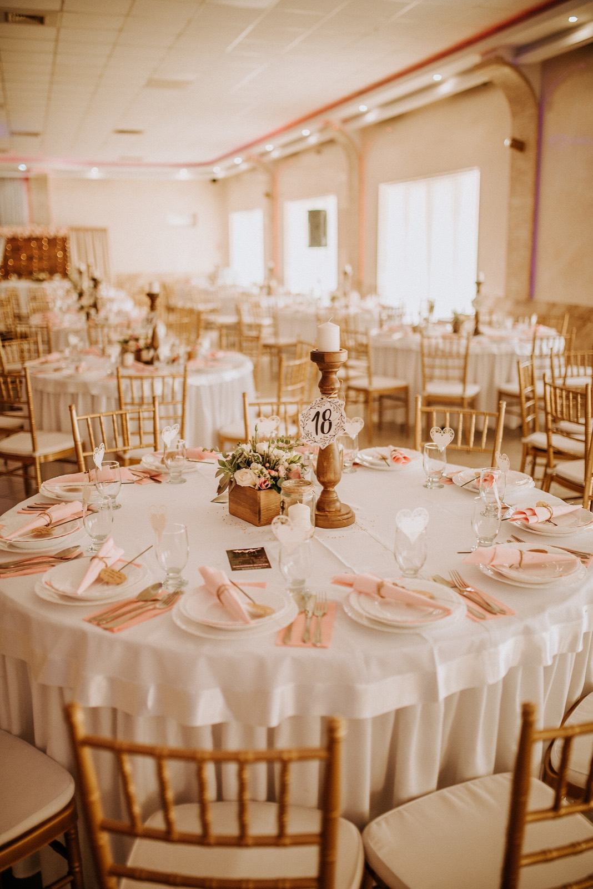

Garden & Events


Garden & In House Events
A big garden, made for gathering
In Ethiopia, a meal is never eaten alone. At Selam Village, plates of tibs and tire siga arrive at the centre of the table and everyone shares by hand, under the trees of our big garden or in our dining room. Our space is also open for your events: weddings, birthdays, graduations, holidays and company gatherings.
- ◈Our big garden
Open air tables among greenery, relaxed, family friendly and perfect for long lunches.
- ◈Traditional coffee ceremony
Roasted, ground and brewed before your eyes, with frankincense in the air.
- ◈In house events
Host your wedding, birthday, graduation or company party in our garden and hall. We handle the food, drinks and service.